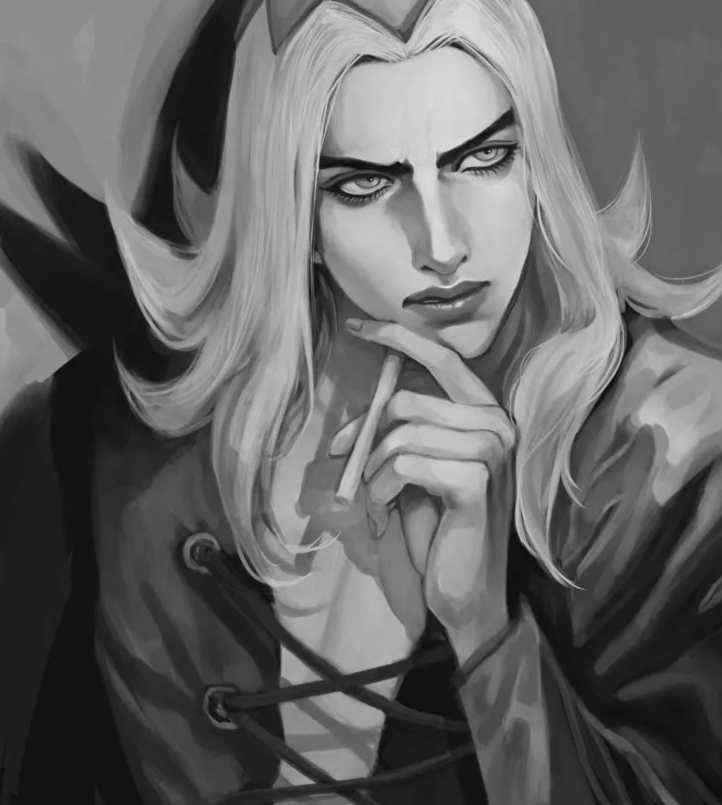

Статус:Бывший полицейский, член банды Бучелатти
Вселенная: (Jojo's Bizzare Adventure)
Способности: Стенд небоевого типа Moody Blues, способный воспроизводить события, происходящие в данном месте в течение времени, указанного его пользователем.
"Я хотел быть праведным полицейским. Было время, когда у меня была такая же воля, как у вас… но я всё испортил. Просто я такой парень"
Бывший полицейский, позднее ставший частью одного из отрядов мафиозной семьи, банды Бучелатти. Когда-то Абаккио хотел сохранить безопасность на улицах и поклялся отдать свою жизнь в поисках справедливости, потому и решил стать полицейским. Тем не менее, высокий уровень преступности среди граждан, их неблагодарность и множество преступников, которые подкупили свой путь к наказанию, подорвали его чувство справедливости, и он начал принимать взятки, говоря себе, что все еще поддерживает мир в городе.
Однако, когда Леоне не смог должным образом арестовать того же самого человека, который когда-то подкупил его, потому что боялся, что его будет сочтен коррумпированным полицейским. И это привело к событию, ставшему окончательной точкой невозврата: его партнер в полиции был смертельно ранен от пулевого ранения. Лишенный своего звания, Абаккио впал в депрессию, но в конце концов присоединился к Passione, чувствуя себя в мире только с праведным Бруно Буччеллати.
ДОСЬЕ ПЕРСОНАЖА
